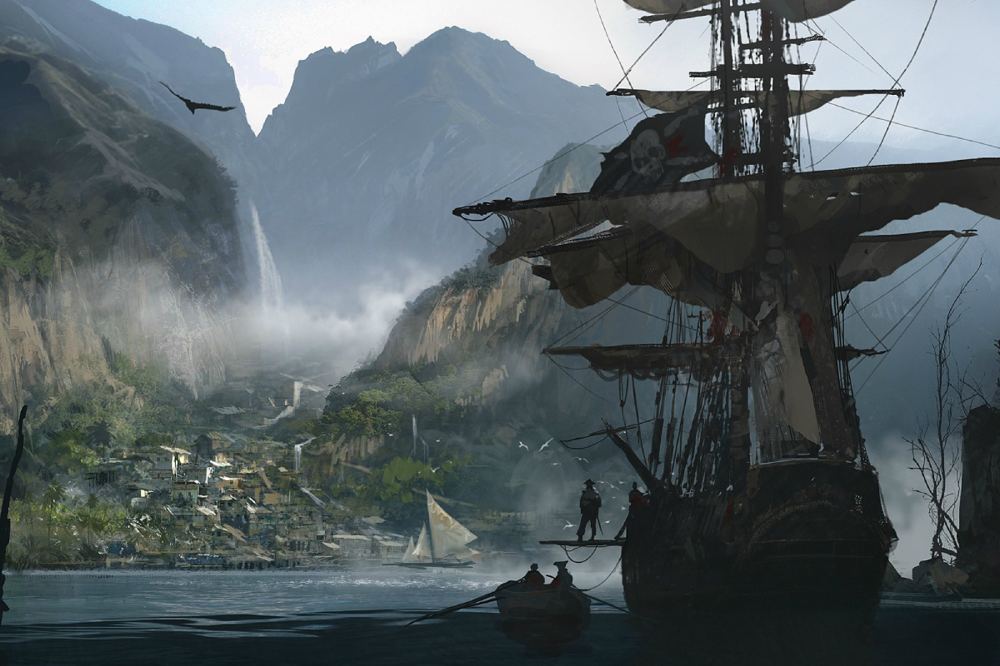
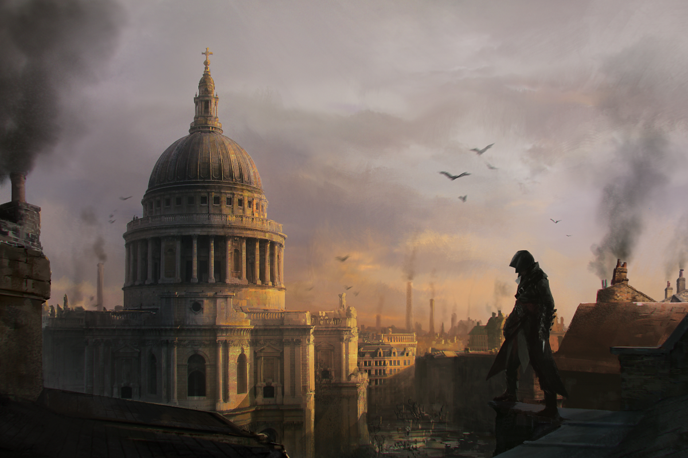

LES ARCHIVES DE LA MÉMOIRE
Tout savoir sur la chronologie, les factions et les héros qui ont forgé la légende.
L'Histoire derrière l'Histoire
L'humanité pense être maîtresse de son destin. C'est un mensonge. Avant nous, il y avait Ceux-qui-étaient-là (Les Isu). Une civilisation technologiquement avancée qui a créé les humains comme main-d'œuvre, contrôlés par des artefacts puissants : les Fragments d'Éden.
Aujourd'hui, grâce à une technologie nommée l'Animus, nous pouvons explorer la "mémoire génétique" de nos ancêtres pour retrouver ces artefacts perdus avant qu'ils ne tombent entre de mauvaises mains.
Deux visions, Une seul guerre
Depuis des millénaires, les deux factions cherchent à sauver l'humanité d'elle-même, mais leurs routes divergent radicalement :
Côté Templier : La Paix par le Contrôle
Pour l'Ordre des Templiers (aussi appelés L'Ordre des Anciens ou Abstergo Industries), l'humanité est intrinsèquement chaotique et dangereuse. Si on laisse les hommes libres, ils s'autodétruisent.
- Leur But : Créer un monde parfait, ordonné et sécurisé.
- Leur Méthode : Diriger les gouvernements, contrôler l'économie et utiliser la technologie pour guider la pensée humaine. Ils pensent que le sacrifice de la liberté est nécessaire pour garantir la paix.
- Devise : "Que le Père de la Sagesse nous guide."
Côté Assassin : La Paix par le Libre Arbitre
Pour la Confrérie, la liberté de choisir est le droit le plus sacré, même si cela implique le risque de faire des erreurs ou de créer le chaos. Personne ne devrait avoir le pouvoir de dicter la vérité aux autres.
- Leur But : Protéger le libre arbitre et empêcher quiconque d'asservir l'esprit humain.
- Leur Méthode : Frapper les tyrans, saboter les plans de contrôle et rester cachés au sein de la population. Ils acceptent que la liberté soit dangereuse, mais refusent la sécurité de la cage.
- Devise : "Rien n'est vrai, tout est permis."
Chronologie de la Saga
L'Héritage Grec
Période : 431 av. J-C (Guerre du Péloponnèse)
Jeu : Assassin's Creed Odyssey
L'Histoire : Bien avant la création officielle de la Confrérie, des mercenaires porteurs d'ADN Isu manient la Lance de Léonidas pour influencer le destin du monde grec.
La Fondation
Période : 49 av. J-C (Égypte Antique)
Jeu : Assassin's Creed Origins
L'Histoire : Dans les sables d'Égypte, Bayek de Siwa transforme sa vengeance personnelle en une cause commune, donnant naissance à l'ordre de "Ceux qu'on ne voit pas".

L'Expansion Médiévale
Période : 861 – 873 (Califat Abbasside & Vikings)
Jeu : Assassin's Creed Mirage, Assassin's Creed Valhalla
L'Histoire : De l'âge d'or intellectuel de Bagdad aux raids brutaux en Angleterre, les proto-Assassins étendent leur réseau à travers l'Europe et le Moyen-Orient.
La Réforme de Masyaf
Période : 1191 (Troisième Croisade)
Jeu : Assassin's Creed I
L'Histoire : En Terre Sainte, Altaïr Ibn-La'Ahad remet en cause les dogmes corrompus de ses maîtres et codifie les règles modernes du Credo : agir dans l'ombre pour servir la lumière.

La Renaissance Italienne
Période : 1476 – 1511 (Italie & Constantinople)
Jeu : Assassin's Creed II, Brotherhood, Revelations
L'Histoire : Au milieu des chefs-d'œuvre artistiques, Ezio Auditore démantèle l'influence des Papes corrompus et des Templiers, devenant le Mentor légendaire de la Confrérie.
L'Âge d'Or de la Piraterie
Période : 1715 – 1722 (Les Caraïbes)
Jeu : Assassin's Creed IV: Black Flag
L'Histoire : Sur les mers des Antilles, la soif de liberté anarchique des pirates entre en collision avec la discipline des Assassins, redéfinissant la notion de libre arbitre.
Le Nouveau Monde
Période : 1754 – 1783 (Guerre de Sept Ans & Révolution Américaine)
Jeu : Assassin's Creed Rogue, Assassin's Creed III
L'Histoire : Une période sombre où la Confrérie américaine est presque anéantie par ses propres traîtres, avant de renaître grâce à un guerrier natif au cœur de la révolution.
L'Ère des Révolutions
Période : 1789 – 1868 (Paris & Londres)
Jeu : Assassin's Creed Unity, Assassin's Creed Syndicate
L'Histoire : Alors que les monarchies s'effondrent et que l'industrie transforme le monde, les Assassins luttent pour que le peuple ne soit pas écrasé par le nouveau pouvoir Templier.
Figures Légendaires
Altaïr Ibn-La'Ahad
Titre : Le Maître Originel
Période : 1191 (Troisième Croisade)
Lieu : Terre Sainte (Masyaf, Jérusalem)
Description : Initialement arrogant, il a dû regagner son honneur pour devenir le Mentor suprême. Il a réformé la Confrérie et rédigé le Codex. Sans lui, l'Ordre n'existerait plus.
Citation : "La sagesse ne s'obtient pas par la force."
Ezio Auditore
Titre : Le Mentor de la Renaissance
Période : 1476 - 1511 (Renaissance Italienne)
Lieu : Florence, Venise, Rome, Constantinople
Description : Un jeune noble cherchant vengeance pour sa famille assassinée, devenu prophète malgré lui. Il est le visage de la franchise et celui qui a redonné sa puissance aux Assassins en Europe.
Citation : "Requiescat in pace."
Connor (Ratonhnhaké:ton)
Titre : "Requiescat in pace."
Période : 1775 (Révolution Américaine)
Lieu : Boston, New York, Frontière
Description : Fils d'un Templier anglais et d'une mère amérindienne. Brutal et idéaliste, il a chassé les Templiers des colonies américaines tout en voyant son propre peuple perdre ses terres.
Citation : "Je ne mourrai pas aujourd'hui."
Edward Kenway
Titre : Le Pirate Assassin
Période : 1715 (Âge d'Or de la Piraterie)
Lieu : Les Caraïbes (Nassau, La Havane)
Description : Grand-père de Connor. Il n'a rejoint le Credo que par avidité avant de comprendre la valeur du sacrifice. Un capitaine charismatique qui maniait deux lames et quatre pistolets.
Citation : "Dans un monde sans or, nous aurions été des héros."
Bayek de Siwa
Titre : Le Fondateur (Le Medjaï)
Période : 49 av. JC (Égypte Antique)
Lieu : Égypte (Alexandrie, Memphis)
Description : Le dernier Medjaï. Après la mort tragique de son fils, il a traqué l'Ordre des Anciens à travers le désert. Avec sa femme Aya, ils ont créé "Ceux qu'on ne voit pas", les ancêtres des Assassins.
Citation : "Je suis le père qui n'a pas su protéger son fils."
Eivor Varinsdottir
Titre : Le Loup
Période : 873 (Invasions Vikings)
Lieu : Norvège, Angleterre
Description : Une chef de clan féroce cherchant une nouvelle terre pour son peuple. Bien que n'étant pas officiellement une Assassin ("Ceux qu'on ne voit pas"), elle a collaboré avec eux pour éliminer l'Ordre en Angleterre.
Citation : "Odin est avec nous !"